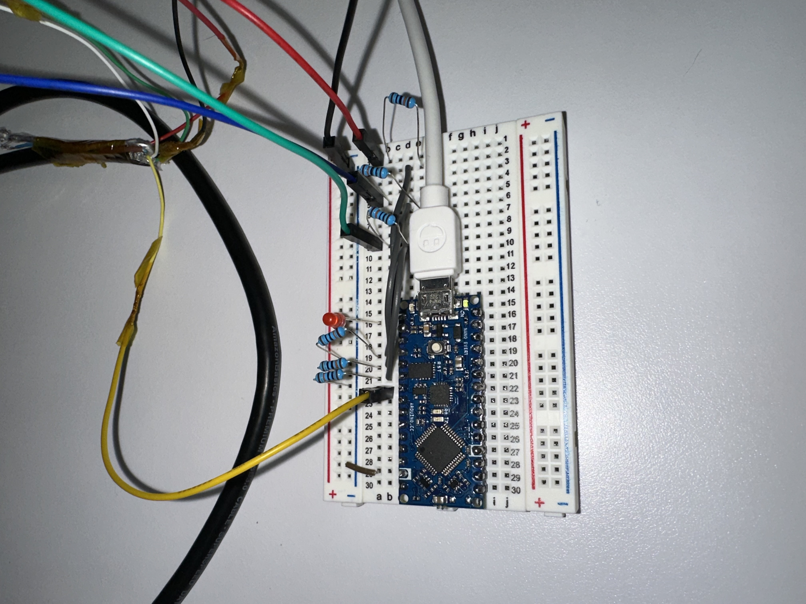
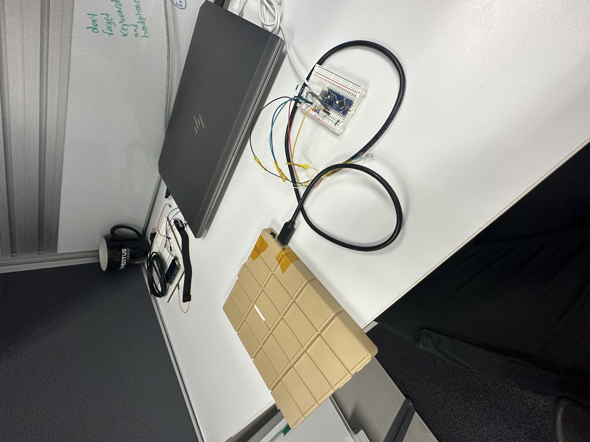
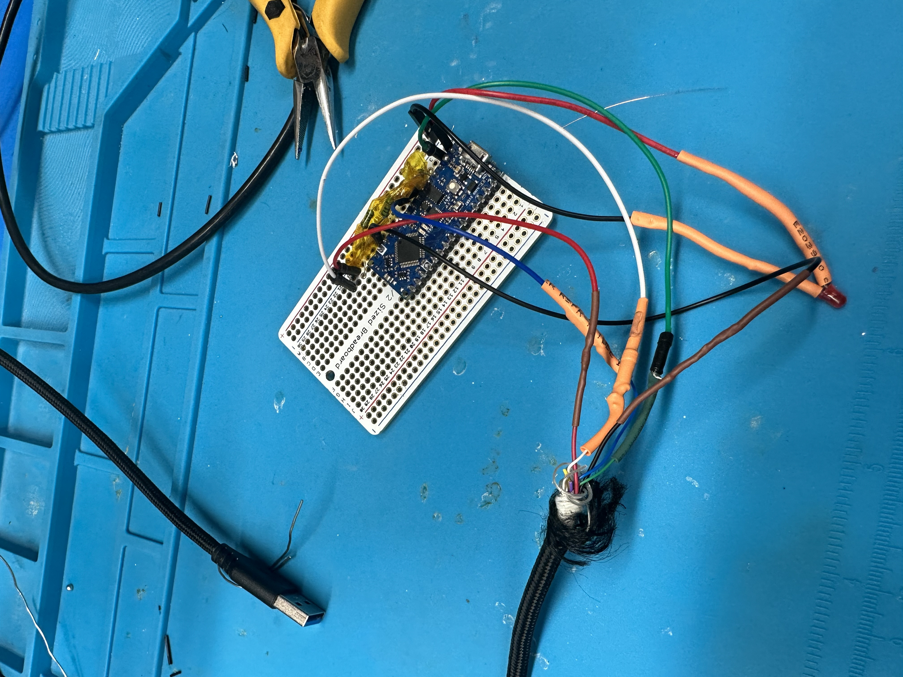
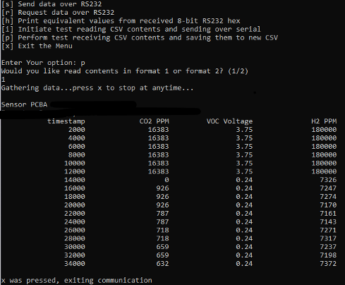
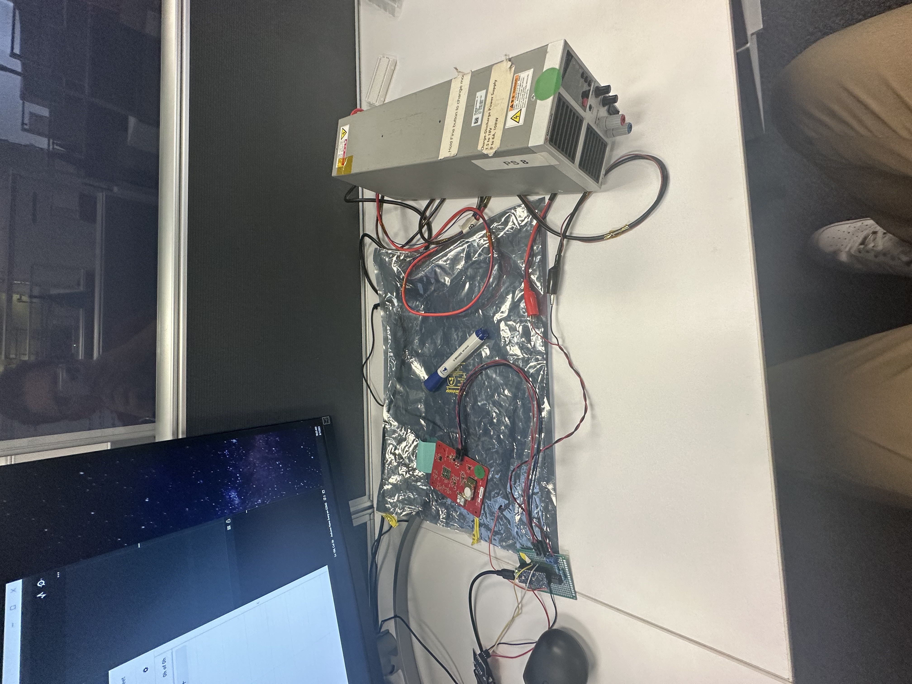
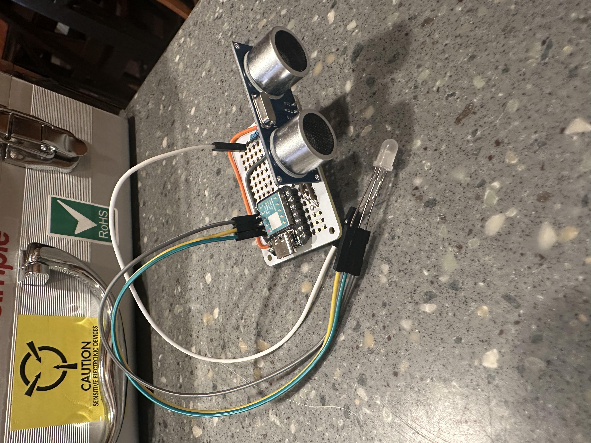
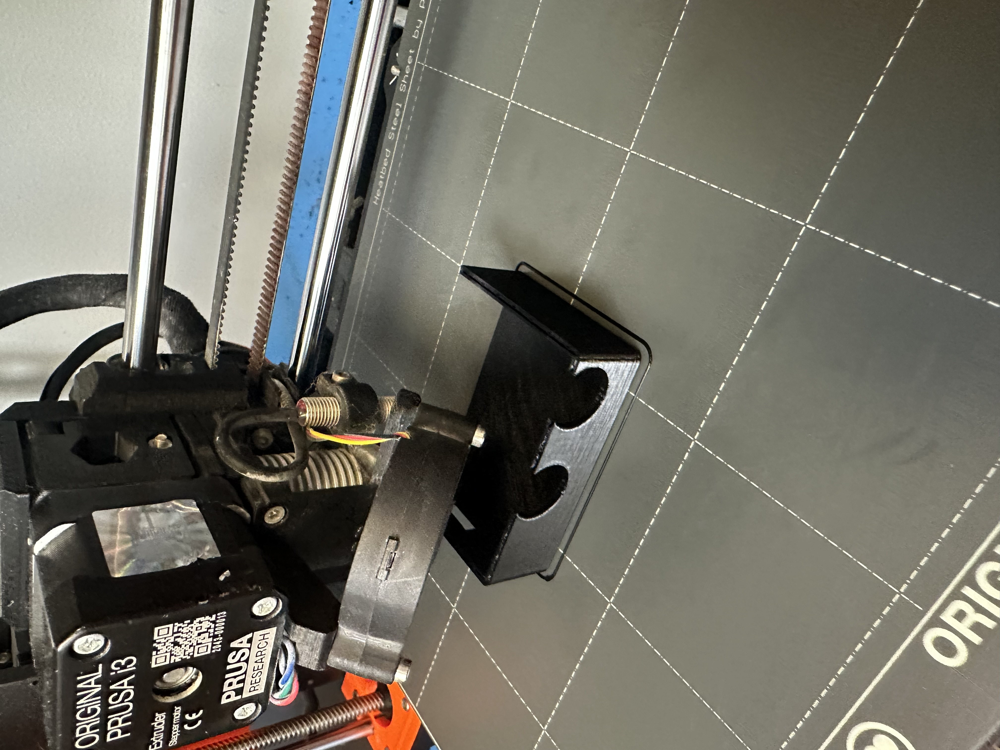

Embedded Systems | Inventus Power
Inventus Internship
This page presents my internship work at a high level, focusing on the systems I supported, the tools I built around them, and the engineering growth that came from working across both software and hardware.
During my time at Inventus Power, I worked on command-line software, Python and embedded C tooling, serial communication workflows, battery system testing, and hardware-facing diagnostics. Because the work was completed in a professional environment with confidentiality constraints, this page emphasizes responsibilities, systems thinking, and technical themes rather than proprietary implementation details.
Overview
The core of the internship revolved around building the technical foundation needed to communicate with and monitor battery-related systems. That meant working across software setup, low-level data handling, communication protocols, testing workflows, and hardware troubleshooting rather than staying inside a single narrow task.
Early on, a lot of the work centered on environment setup, learning how Python and C modules could work together, and understanding how command-line tools could be used to gather, decode, and present system data.
Technical Focus Areas
- Python and embedded C development for internal engineering workflows
- Command-line tooling and data handling for test scenarios
- Serial interfaces including USB, RS232, UART, CAN, and I2C
- Sensor data collection, decoding, parsing, and formatting
- Hands-on troubleshooting of battery-related hardware systems
Internship timeline
From early prototyping to working communication hardware.



What I Worked On
A large portion of the internship was spent building and refining communication workflows. That included creating tools that could exchange data between software and hardware, testing serial communication paths, and simulating realistic data transmission so that workflows could be exercised before everything was tied to real hardware.
The work also involved repeated iteration: trying an approach, finding where assumptions broke down, restructuring the code or hardware path, and then validating that the updated flow behaved more reliably.
What I Learned
One of the biggest lessons from the summer was that good engineering is not just about writing code that works once. It is about defining inputs and outputs clearly, handling failure cases, planning data flow, and structuring code so it can evolve when requirements change.
The summer also strengthened my understanding of how software behavior changes once it is attached to real devices. Timing, formatting, handshake behavior, and debugging all become more important when hardware is in the loop.


Responsibilities & Contributions
- Developed internal software utilities using Python and C-based modules
- Worked with serial communication paths and data exchange between systems
- Created or refined workflows for parsing, formatting, and writing data
- Supported debugging and troubleshooting of both software and hardware issues
- Contributed to documentation, diagrams, and maintainability of engineering work
Production, Documentation, and Engineering Process
Beyond pure development work, the internship also exposed me to the broader process around engineering in industry: Jira for planning, Doxygen for documentation, Visio for flowcharts, and production-floor troubleshooting where the ability to communicate clearly mattered just as much as the technical fix itself.
That combination of tooling, debugging, and documentation ended up being one of the most valuable parts of the experience because it showed how engineering work is carried forward by teams after an internship ends.
Initiative and growth
Hardware experimentation, side learning, and final presentation work.




Tools & Technologies
- Python
- Embedded C
- Arduino
- USB, RS232, UART, CAN, and I2C communication workflows
- Jira, Doxygen, Visio, Excel, and supporting engineering tools
Why This Page Is High Level
This internship page is intentionally written at a broad level to respect NDA and confidentiality constraints. The goal is to communicate the nature of the engineering work, the skill areas involved, and the practical responsibilities I handled without exposing protected implementation details.
Taken together, the internship was an important step in learning how to move between code, communication protocols, documentation, testing, and physical hardware in a professional engineering environment.